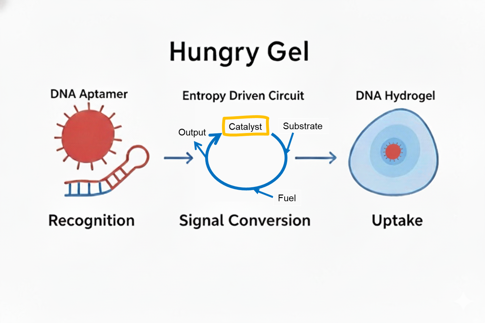
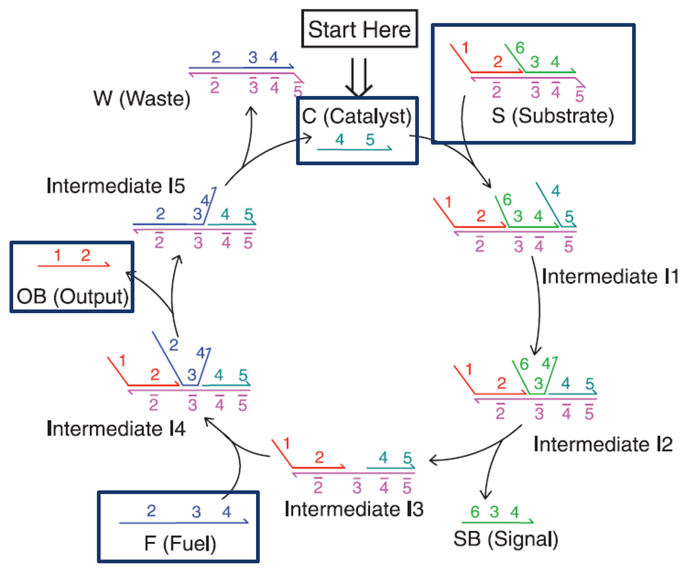
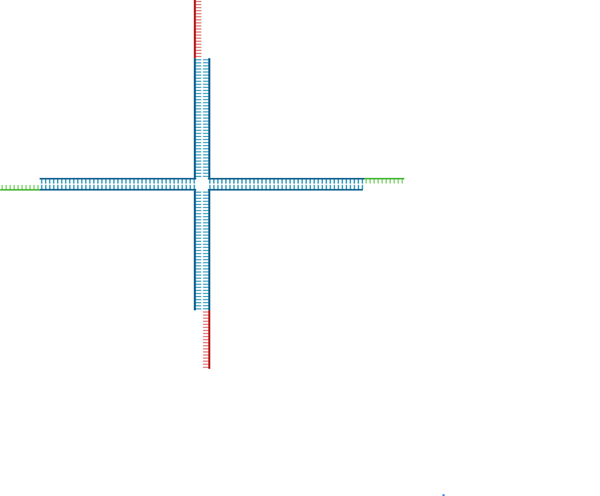
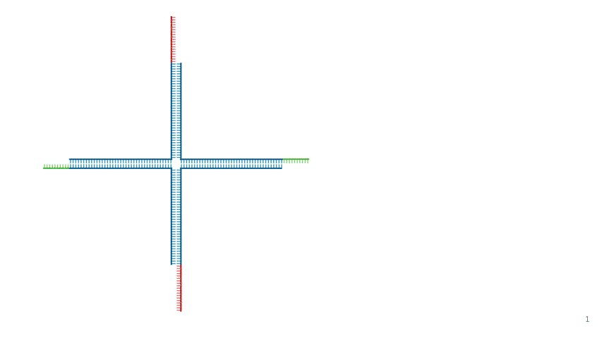
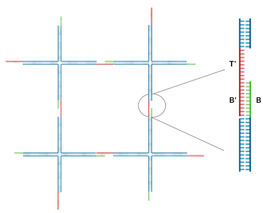
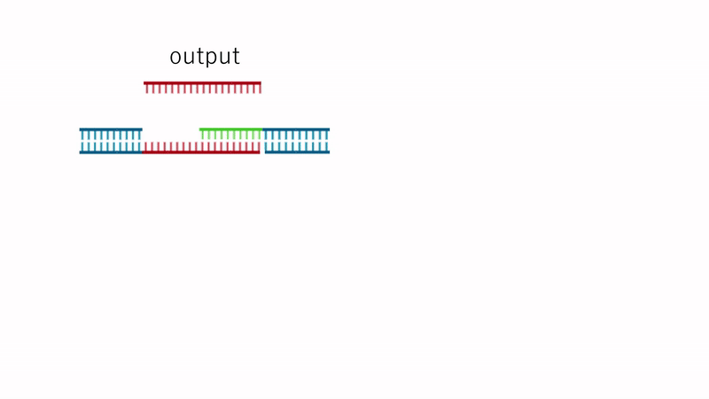

Overview of the design
もう少し簡潔に全体の流れが分かる図にしたい
私たちが考案したHungry Gelは、DNAアプタマー、エントロピー駆動回路、DNAハイドロゲルという3種類のDNAモジュールの組み合わせによって構成される。これ以降では、それぞれの役割と機能、およびそれらがどのように一連の応答を実現するかを詳述する。
Hungry Gel is composed of three types of DNA modules: DNA aptamers, entropy-driven circuits, and DNA hydrogels. In this paper, we describe in detail the roles and functions of each module, as well as how they cooperate to produce a series of responses.
DNA Aptamer
いったんめんどいから修正後回しにしてます
Fig.2 Aptamer Mechanism
アプタマーは、特定の分子のみに強く結合する短いDNAまたはRNA配列である。さらに、アプタマーの配列を変更することで、標的となる細菌も変更できる。この実験では、アプタマーが標的細菌に反応し、新たなDNA配列を露出させるという役割を持つ。 具体的には、アプタマーはハイドロゲルに固定され、他の分子とは反応せず、標的の細菌が接近するのを待っています。そして、標的細菌がアプタマーに接近するとアプタマーは標的細菌にくっつき、構造が変化します。これによって、アプタマーは自身の折りたたまれた立体構造を解き、それまで内部に隠されていた新たなDNA配列が露出します。この露出した配列は、次のエントロピー駆動回路の触媒として機能します。
Entropy Driven Amplification Circuit
Fig.3 Entropy-driven Circuit
エントロピー駆動回路の役割は、アプタマーが生成する微弱な出力信号の濃度を、ハイドロゲル溶解に必要なレベルまで増幅することです。私たちは、Zhangらが提案した酵素を用いない増幅回路[1]をそのまま配列を変えずに利用し、後述するDNAハイドロゲルの配列をこの回路のOutput配列に合わせて設計した。 回路に用いられている配列はAppendixに記載しています。
The role of the entropy-driven circuit is to amplify the weak signal generated by the aptamer to a level sufficient to induce hydrogel dissolution. We employed the enzyme-free amplification circuit proposed by Zhang et al. [1] without modifying its sequences, and designed the DNA hydrogel sequences to match the output sequence of this circuit. The sequences used in this circuit are listed in the Appendix.
DNA Hydrogel

Fig.4 DNA Hydrogel Four-arm Motif

Fig.5 Assembly of DNA Hydrogel Four-arm Motif
・DNA Sequence Design
本プロジェクトでは、Fig.4に示す4分岐DNAハイドロゲルモチーフを採用した。各モチーフは上下左右の4本のアームを持ち、末端にスティッキーエンドを配置している。DNA配列はKandatsuら[2]を参考に設計し、低濃度でのゲル化を実現するためアーム長を34塩基とした。 スティッキーエンドは、長いドメインA（14塩基、赤）と短いドメインB（8塩基、緑）の2種類で構成され、ドメインAは上下に、ドメインBは左右に配置されている。両ドメインは相補的であり、モチーフ同士が順次結合して三次元ネットワークを形成する。なお、ドメインBを長く設計したのは、Output DNAが結合する際のトーホールドを提供するためである。 この突出した6塩基の領域がトーホールドとして機能し、Output DNAの結合開始点となる。 具体的な配列はAppendixに記載しています。
In this project, we adopted a four-armed DNA hydrogel motif as shown in Fig. 4. Each motif consists of four arms (top, bottom, left, and right), with sticky ends located at their termini. The DNA sequences were designed based on the study by Kandatsu et al. [2], with the arm length set to 34 nucleotides to enable gelation at low concentrations. The sticky ends consist of two types: a longer domain A (14 nt, shown in red) and a shorter domain B (8 nt, shown in green). Domains A are positioned on the top and bottom arms, while domains B are placed on the left and right arms. Because the two domains are complementary, neighboring motifs hybridize sequentially to form a three-dimensional network structure. Domain B was designed to be longer to provide a toehold for the binding of the output DNA. This 6-nucleotide overhang functions as a toehold and serves as the initiation site for output DNA binding. The detailed sequences are provided in the Appendix.
・Assembly Mechanism
Fig.6 DNA Hydrogel Network
Fig.5に示すように隣り合うモチーフはスティッキーエンドを介して結合し、大きなネットワーク構造を形成する。Fig.6に示すように、あるモチーフのドメインAと隣接モチーフのドメインBが相補的結合を形成している。この時、ドメインAよりも長いドメインBの一部(トーホールド領域)は1本鎖で露出したまま、ゲルネットワークを形成する。
As shown in Fig. 5, adjacent motifs are connected via their sticky ends to form a large network structure. As illustrated in Fig. 6, domain A of one motif hybridizes with domain B of a neighboring motif through complementary base pairing. In this configuration, a portion of domain B, which is longer than domain A (the toehold region), remains as a single-stranded overhang within the gel network.
・Dissolution Mechanism
Fig.7 Dissolution Mechanism
Fig.7のようにドメインBのトーホールド領域に、エントロピー駆動回路から生成されたOutput DNAが結合する。Output DNAはトーホールドを足掛かりとして鎖置換反応を開始し、ドメインAを押し出す。この置換反応はOutput DNAとドメインBの相補的な結合の方が、ドメインAとドメインBの部分的な結合よりも熱力学的に安定であるために進行する。この微視的な結合破壊が無数に起こることで、ハイドロゲルは溶解する。
System Integration
ここはまだ変更できてない
Hungry Gelシステムは、3つのDNAモジュールを分子レベルで統合することで実現されています。アプタマーが標的細菌と結合した際の構造変化により露出するDNA配列が、そのままエントロピー駆動回路のカタリスト配列として機能するよう設計しました。これにより、標的検出が直接的に信号増幅回路を活性化する仕組みを構築しています。今回の実験では、このカタリスト配列を外部から添加することで回路の動作を検証しました。
システムの核心となるのは、エントロピー駆動回路の出力配列とDNAハイドロゲルの架橋構造との相互作用設計です。短いスティッキーエンドの長さを出力配列よりも短く設計することで、ハイブリダイゼーションによる鎖置換反応が効率的に進行します。この設計により、熱力学的により安定な結合が形成される際に元の架橋結合が自発的に切断され、局所的なゲル溶解が引き起こされます。
標的細菌近傍でのみゲルが溶解する機能の実現においては、アプタマーの構造変化が標的細菌近傍でのみ起こることを利用しています。この局所的な構造変化により、回路活性化からゲル溶解まで一連の反応が空間的に制限され、マクロファージの選択的貪食作用を模倣した機能が実現されます。
システム全体の安定性確保のため、NUPACKソフトウェアを用いてDNAハイドロゲルの全配列を設計し、エントロピー駆動回路とハイドロゲル配列間での非特異的相互作用を回避することで、設計通りの特異的な動作を保証しています。
Reference
[1]David Yu Zhang, Andrew J. Turberfield, Bernard Yurke, and Erik Winfree(2007)”Engineering Entropy-Driven Reactions and Networks Catalyzed by DNA”.Science,318,pp.1121-1125
[2]Daisuke Kandatsu et al.(2016)”Reversible Gel-Sol Transition of a Photo-Responsive DNA Gel”.ChemBioChem,17.pp.1118-1121
Appendix
Sequence List
・DNA sequence used as a motif
| Name | Sequence (5'→3') |
|---|---|
| Strand1 | AAGTTTTGACCTTAGGGTTCCCCTTACGCATCTTCGCGGGTAGCTAAATTAAGATTGCTAGCGAGGCCGACGAAGGTGTAGG |
| Strand2 | GGCCTCGCTAGCAATCTTAATTTAGCTACCCGCGACATCAAGCCACGGCGCTGAGAAAGATGGAACAACCTACACC |
| Strand3 | TTGTTCCATCTTTCTCAGCGCCGTGGCTTGATGTCCTGATCTCTTTAAACGGAAGCTTTGACGAAACGGACGAAGGTGTAGG |
| Strand4 | CGTTTCGTCAAAGCTTCCGTTTAAAGAGATCAGGAAGATGCGTAAGGGGAACCCTAAGGTCAAAACTTCCTACACC |
・Entropy Driven Amplification Circuit
| Name (see entropy driven circuit diagram) | Sequence (5'→3') |
|---|---|
| Catalyst | CATTCAATACCCTACGTCTCCA |
| Signal | CCACATACATCATATTCCCTCATTCAATACCCTACG |
| Fuel | CCTACGTCTCCAACTAACTTACGGCCCTCATTCAATACCCTACG |
| output | CTTTCCTACACCTACGTCTCCAACTAACTTACGG |